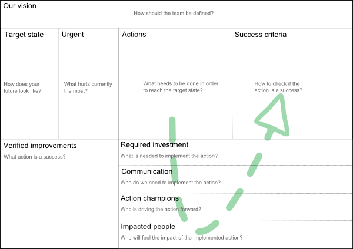

v0.3
Products should be developed strategically. If that is not the case than it is not product development but only fire fighting. For teams the same principle is true. In order to move from fire fighting to strategic team development typical retrospective tools are not enough.
The Canvas is a good fit for this purpose as it is adaptable, visible and easy to use.
The original Canvas is the Business Model Canvas helping enterprises to summarize their business. This concept was further enhanced and reused for product development in the Product Canvas. Additionally the Canvas is starting to gain grounds for change management. An example is the Lean Change Canvas. Keep in mind that team development also needs change management if done effectively.

This is the team's vision how they would describe themselves in the future with only one short sentence. I strongly suggest that the team comes up with one.
The target state describes the environment and traits the team has, when the vision is met. Examples:
This is the place you can attach typical impediments happening during the Sprint. At the retrospective the team can decide if this is something which needs to be tackled "strategically" or not.
Improvements are put up here. They should always have a connection to the target state. If this is not the case you should check if you need to adjust the target state or scrap the improvement. Examples:
Here starts the fun part. It is often very difficult to come up with a good type of measurement. If the improvement should reap only long-term benefits which can be measured, consider slicing the action or keeping the action on the board until verified/falsified. Examples:
Here starts the fun part. It is often very difficult to come up with a good type of measurement. If the improvement should reap only long-term benefits which can be measured, consider slicing the action or keeping the action on the board until verified/falsified. Examples:
A place to put successful improvements. The goal is to have a hall of achievements and a reminder how the "process" looks like. There is no room for non-working improvements on purpose as this would invite exclamations like "It did not work before, why should it now?".
During the iteration the team might come up with good ideas for improvements. If you attach a sheet of paper right next to the Team Canvas the team members can add new possible improvements whenever they like. In the retrospective check those ideas and flesh them out.
To be inserted
To be inserted